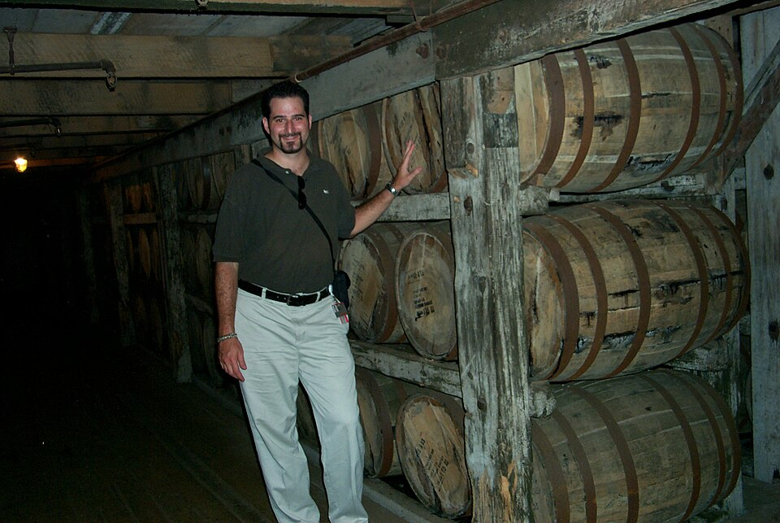

Every barrel is used exactly once — then sold to Scotch, rum, and beer makers worldwide.
America's Native Spirit — Two Centuries in the Barrel
Bourbon is not just a flavor — it's a legal designation. Six federal regulations define what can call itself bourbon. Break any one of them and you're making whiskey, not bourbon.
Bourbon must be produced in the United States. While most comes from Kentucky, bourbon can legally be made in any state — Texas, New York, Tennessee (if it doesn't charcoal-filter).
The mash — the mix of grains cooked and fermented — must be at least 51% corn. Most bourbons run 65–80%. Corn gives bourbon its characteristic sweetness and body.
The distillate must not exceed 160 proof (80% ABV). Higher proofs strip out the grain character that defines bourbon. This is why bourbon must be distilled in column stills, not continuous stills that push proof higher.
The single most important rule. Bourbon must age in new, never-before-used charred oak barrels. This is what gives bourbon its color, vanilla, caramel, and oak character — and why Scotch distillers happily buy used bourbon barrels.
The spirit enters the barrel at no more than 125 proof (62.5% ABV). Lower entry proof means more water relative to alcohol, and more contact between the spirit and the wood, producing richer, more complex flavors.
Bourbon must be bottled at a minimum of 80 proof (40% ABV). It can be diluted with pure water down to 80 proof, or bottled "cask strength" at whatever proof it left the barrel — sometimes over 130 proof.

Seven distinct stages transform raw grain into the amber liquid that ends up in your glass. Each step has been refined over two centuries of craft and science.
The mash bill is the distiller's signature. Corn provides sweet body; rye adds spice and dryness; wheat delivers softness and floral notes; malted barley provides the enzymes that convert starches to fermentable sugars.
Typical ratios: 65–80% corn, 5–20% rye or wheat, 5–15% malted barley
Grains are hammer-milled to break them open, then cooked with hot water in large cookers. Corn is added first at high heat, then temperature is dropped to add rye/wheat, then barley. The "setback" — spent liquid from a previous distillation — is often added for pH control.
Sour mash: recycled backset keeps fermentation consistent batch to batch
Yeast is added to the cooled mash in massive cypress wood or stainless tanks. Over three to five days, yeast converts sugars to alcohol, CO₂, and hundreds of congener compounds that will become flavor. The result — "distiller's beer" — is around 6–8% ABV.
Yeast strain is each distillery's most guarded secret, often maintained for generations
The beer runs through a column still to produce "low wine" around 55–70% ABV, then through a "doubler" or "thumper" pot still to reach final distillate strength. The distiller makes "cuts" — selecting only the heart of the run, discarding the harsh heads and tails.
The clear, unaged spirit is called "white dog" or "new make" — fiery and raw
New American white oak barrels — typically 53 gallons — are charred on the inside. Char levels range from #1 (light caramelization) to #4 "alligator" (deep cracking char). The char creates a "red layer" just below the surface: a filter of caramelized sugars that strips sulfur while imparting vanilla and caramel.
A single barrel holds roughly 200 bottles at bottling strength
Barrels are stacked in unheated, uninsulated rickhouses (aging warehouses). Kentucky's climate — blazing summers to 100°F, winters below freezing — causes barrels to expand and contract, pushing spirit deep into the wood and back out again. Upper floors run hotter, producing faster-maturing, bolder spirits.
60–70% of a bourbon's final flavor comes from the wood and the aging environment
Mature barrels are dumped and blended to achieve consistent flavor profiles, or bottled as single barrels. Proof is reduced by adding limestone-filtered Kentucky spring water. Premium bottlings are non-chill filtered to preserve oils, waxes, and fatty acids that give the liquid body and a rich "bead" in the glass.
The "angel's share" — roughly 3–5% per year evaporates through the barrel
The grain recipe — called the mash bill — is the blueprint of every bourbon's flavor. Small shifts in corn, rye, wheat, and barley percentages produce dramatically different taste profiles, ranging from soft and dessert-sweet to bone-dry and peppery.
From century-old family operations to architectural landmarks, these are the cathedrals of bourbon — where history, water, wood, and weather conspire to produce liquid that cannot be replicated anywhere else on earth.
From the everyday pours that defined a culture to the allocated bottles that inspire predawn queues and auction records, these are the bottles that matter.
Bourbon rewards patience and attention. A deliberate tasting reveals layers of complexity that a quick sip will miss entirely.
Click or hover a segment to explore. Bourbon's flavor compounds number in the hundreds — these are the major families you'll encounter in any well-made expression.
Bourbon, sugar cube, Angostura bitters, orange peel. The original cocktail. Use a high-rye bourbon for a drier, more aromatic glass.
2 oz bourbon, 1 oz sweet vermouth, 2 dashes Angostura, cherry. Stirred, never shaken. A wheated bourbon softens beautifully with vermouth.
Bourbon, fresh mint, sugar, crushed ice. The official drink of the Kentucky Derby since 1938. Over 120,000 served each Derby weekend.
Bourbon, Campari, sweet vermouth. The Negroni's bourbon-drinking cousin. Richer, more amber, with that characteristic bittersweet finish.
Equal parts bourbon, Aperol, Amaro Nonino, lemon juice. Modern classic by Sam Ross. Bright, tart, complex — best with a 100-proof bourbon.
"Too much of anything is bad, but too much good whiskey is barely enough."— Mark Twain
You cannot fully separate bourbon from Kentucky. The state's unique geography — its water, climate, and culture — produced conditions so ideal for whiskey aging that they became legally inseparable from the spirit's identity.


Kentucky sits on a vast limestone shelf that filters groundwater, removing iron (which turns whiskey black and bitter) while adding calcium and magnesium that benefit yeast health and fermentation. This water — uniquely low in iron, uniquely mineral — is considered impossible to fully replicate elsewhere.
Kentucky summers reach 100°F; winters drop below 0°F. This extreme cycling causes barrels to expand in summer heat, pushing spirit deep into the wood grain, and contract in winter cold, pulling the spirit back out enriched with oak extracts, vanillin, and tannins. No climate on earth produces this same effect.
Kentucky's rich soil produced surplus corn from the earliest settlement era. Corn-based spirits were a practical way to preserve and transport grain value over long distances. The Ohio and Mississippi Rivers gave early distillers access to New Orleans markets — the barrels aged on the journey south.
Nelson County's Bardstown has been named the "Bourbon Capital of the World." Heaven Hill, Maker's Mark, and Jim Beam are all within 30 miles. The Kentucky Bourbon Trail officially launched in 1999 and now draws millions of visitors annually to 37+ distilleries across eight historic counties.
37+ distilleries across 8 counties. Over 2 million visitors annually. The trail launched in 1999 and transformed Kentucky tourism.

From frontier corn whiskey to Congress-designated national spirit to global luxury commodity — bourbon's arc mirrors American history itself.
Evan Williams establishes the first distillery in Louisville along the Ohio River, producing corn-based whiskey from the region's grain surplus.
Baptist minister and entrepreneur Elijah Craig is credited with discovering that aging corn whiskey in charred oak barrels transforms the raw spirit into something remarkable. The char, legend holds, was accidental — using barrels scorched in a barn fire.
Kentucky limestone water, ideal climate, and abundant corn make the region the undisputed center of American whiskey production. Bourbon County, KY gives the spirit its name — barrels shipped down the Mississippi were stamped "Old Bourbon."
George Garvin Brown bottles Old Forester in sealed glass, a revolutionary consumer protection innovation that prevents adulteration at the retail level. This is the birth of branded bourbon.
Congress passes the Bottled-in-Bond Act — the first federal consumer protection law in American history. It defines a single distillery, single season, four-year minimum aged, 100-proof standard. A direct response to widespread adulteration of whiskey with industrial alcohol and poisons.
The Volstead Act shuts down nearly every American distillery. Only a handful remain open to produce "medicinal whiskey" — including Buffalo Trace (then called George T. Stagg Distillery) and Brown-Forman. The bourbon industry loses 13 years of production and institutional knowledge.
A concurrent resolution of Congress designates bourbon whiskey "a distinctive product of the United States." This triggers international trade protection: Scotch is Scotch, Cognac is Cognac, and bourbon is uniquely American.
Buffalo Trace master distiller Elmer T. Lee releases Blanton's Single Barrel Bourbon — the first commercially marketed single barrel whiskey in history. A category is born. The distinctive spinning horse-and-jockey stopper becomes an icon.
Julian Van Winkle III releases Pappy Van Winkle's Family Reserve — ultra-aged wheated bourbons using old Stitzel-Weller stocks. Initially ignored by critics, they will eventually become the most coveted spirits in American history.
American whiskey experiences an unprecedented revival. International demand, especially from Asia and Europe, sends production into overdrive. Distillers that mothballed rickhouses in the lean 1980s scramble to catch up with demand they cannot fill for years.
BTAC and Pappy allocations spawn overnight camping lines at retailers. A black market thrives. Pappy 23-Year sells at auction for over $100,000. Buffalo Trace cannot produce barrels fast enough — some expressions sell out within minutes of release each autumn.
Despite booming craft distilling in every US state, Kentucky still produces 95% of the world's bourbon. Over 11 million barrels age in Kentucky rickhouses — more barrels than the state has people. The industry contributes $9 billion annually to Kentucky's economy.